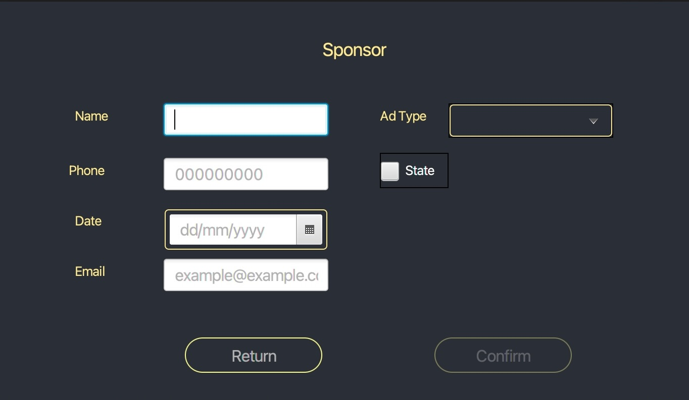

Gestion de anuncios: Ayuda
Formulario
Descripción General
En esta ventana el Administrador encontrara una tabla con los datos de los anuncios en la podra crear, modificar y eliminar los anuncios de la aplicación, ademas de un campo de busqueda en la que podra filtrar por fecha y por nombre. Así mismo podrá generar un informe que contiene un listado de los anuncios con sus correspondientes datos.
Operaciones
Crear anunciosPara crear un anuncio el administrador debera pulsar el boton de Create en la que abrirá un formulario con un botón de Confirm deshabilitado y otro botón de Return para volver a la ventana anterior. Para habilitarlo todos los campos de texto deben estar informados. Se le pedira el nombre del anuncio, el numero de teléfono del anunciante, la fecha de publicación, el correo electronico, tendra un desplegable en la que podrá elegir el tipo de anuncio que desee y además podrá activar o desactivar el estado del anuncio. El administrador tendra que tener en cuenta que existen validaciones en cada uno de los campos de texto, que se le informará con mensajes advertencias. Si no se ha producido un error al pulsar en el botón de confirmación volvera a la ventana anterior, se creara el nuevo anuncio y aparecera en la tabla de los anuncios.
Modificar datos de un anuncioPara modificar los datos de un anuncio el administrador se encontrará con el boton de Modify deshabilitado. Para habilitarlo deberá seleccionar el anuncio haciendo click en la fila deseada y que al pulsar en el botón Modify se abra la ventana del formulario. Los campos estaran informados con los datos del anuncio en la que se pueden realizar cambios. Una vez realizados los cambios, si no se ha producido ningun error, deberá pulsar el botonConfirm para volver a la ventana anterior y los datos actualizados apareceran en la tabla de los anuncios.
Eliminar un anuncioPara eliminar un anuncio el administrador se encontrara con el boton de Delete deshabilitado. Para habilitarlo deberá seleccionar el anuncio a borrar haciendo click en la fila deseada de la tabla de los anuncios, y al pulsar el boton Delete se le solicitará confirmacion para eliminar el anuncio. Si confirma y no se produce ningun error se eliminara el anuncio y la tabla se actualizara.
Buscar un anuncioEl administrador tendrá un campo de busqueda en la que podrá buscar un anuncio por el nombre o la fecha de publicación y tendra un desplegable en la que podra seleccionar uno de estos filtros. Al pulsar en el boton Find, si resulta que no ha escrito nada en el campo aparecera un mensaje de aviso de informar el campo. Si elige la opcion de buscar por nombre se comprobara que el nombre introducido exista, si es por fecha solo podra introducir una fecha valida con el formato (dd/mm/yyy) y no cualquier caracter, en estos casos aparecera mensajes de aviso para ayudar al administrador a encontrar el anuncio que desee. Si no se ha producido ningun error al pulsar en el botón Find aparecera en la tabla la fila del anuncio con todos sus datos, con el nombre o fecha que se ha especificado en el campo de busqueda.
Imprimir listado de anunciosPulsando el botón Report se abrira una ventana
donde puede ver un documento que contiene una lista de anuncios
que existen en la apliacion:
Pulsando la X en la parte superior de la ventana se le pedira confirmación para salir
AyudaEn el menu que se encuentra en la parte superior de la ventana pulsando en Help verá este documento de ayuda.